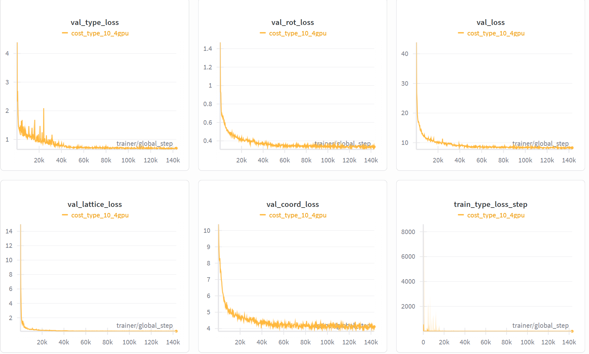
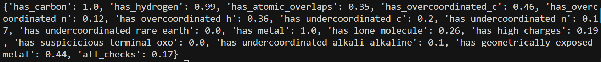
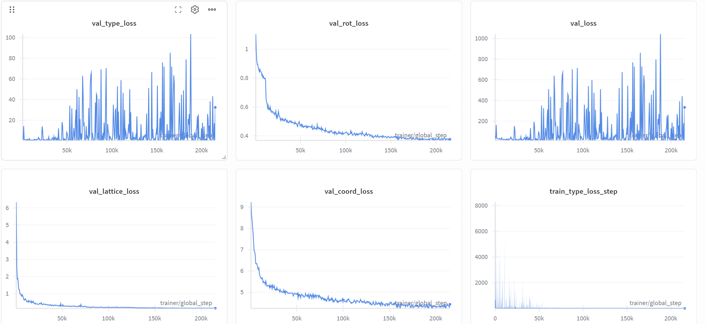
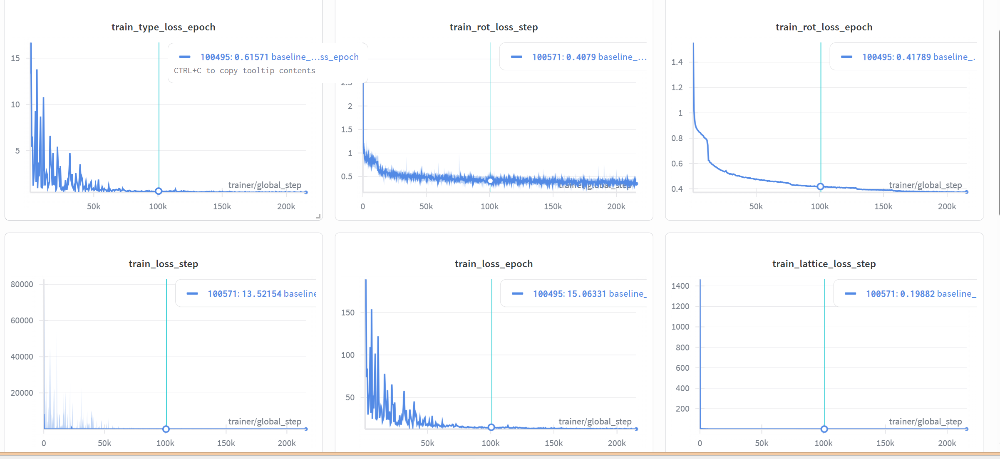
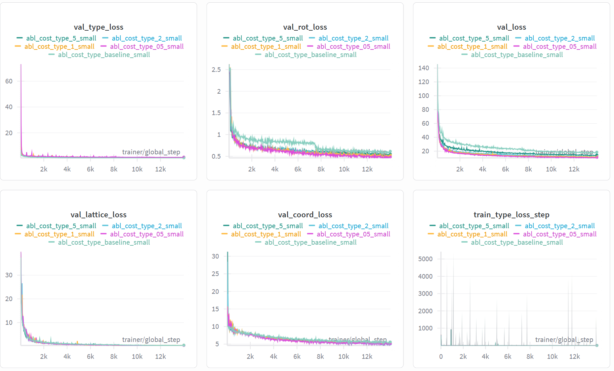

3-16-repo
师兄的建议¶
- 小规模训练需要先在训练 / 验证上收敛，结果才更有说服力。
- 分析并解决 type loss 长期降不下来的问题。
- 考虑分阶段训练：先区分有机 / 金属，再区分具体类型（当前有机和金属已经可以较好区分，接下来主要关注第二阶段的细分类）。
- 在 validation 上对 type loss 做错误分析：区分是大类（有机 / 金属）错，还是细分类（具体 building block）错。（已完成）
昨天的实验结果¶
- 调低 type loss 权重后，val_type_loss 有所下降：
即把 cost_type 从 10 降到 1，让 type 与 coord / lattice / rot 的加权贡献处于同一量级，可以看到val_type_loss有明显下降趋势。

# /home/liem/MOF-BFN/ablation_ckpts/logs/mof_bfn_volume/cost_type_10_4gpu/ckpt/epoch_737-step_105534-loss_8.1659.ckpt
export LD_LIBRARY_PATH=/home/liem/.local/share/mamba/envs/mof-bfn/lib:$LD_LIBRARY_PATH
PYTHONPATH=. python -m experiments.infer \
paths.save_dir=/home/liem/MOF-BFN/ablation_ckpts \
experiment.wandb.name=infer_dng_test \
inference.ckpt_path=/home/liem/MOF-BFN/ablation_ckpts/logs/mof_bfn_volume/cost_type_10_4gpu/ckpt/epoch_737-step_105534-loss_8.1659.ckpt \
inference.inference_dir=/home/liem/MOF-BFN/infer_results_test_3_16_type_loss_down
python -m postprocess.assemble \
--res_path /home/liem/MOF-BFN/infer_results_test_3_16_type_loss_down/raw_results.pt \
--bb_z_path /home/liem/data/mofbfn/datasets/dng/bb_emb_space_tot_z.pt \
--bb_blocks_path /home/liem/data/mofbfn/datasets/dng/bb_emb_space_tot_blocks_processed.lmdb \
--max_process 100
# 检查连通性（是否形成完整 3D 骨架）
python -m evaluation.connect_check \
--res_path /home/liem/MOF-BFN/infer_results_test_3_16_type_loss_down/raw_results.pt \
--bb_z_path /home/liem/data/mofbfn/datasets/dng/bb_emb_space_tot_z.pt \
--bb_blocks_path /home/liem/data/mofbfn/datasets/dng/bb_emb_space_tot_blocks_processed.lmdb \
--max_process 100
# 有效性检查（Validity Check）
python -m evaluation.validity_check \
--res_path /home/liem/MOF-BFN/infer_results_test_3_16_type_loss_down/samples \
--max_process 100
connect：0.84

- 虽然图像上的 loss 曲线已经比较收敛，但从生成结构的质量来看，整体效果仍然不理想。
区分有机/金属¶
PYTHONPATH=. python scripts/analyze_type_errors.py \
--ckpt_path /home/liem/data/mofbfn/checkpoints/dng/60882304_last.ckpt \
--config_path configs/bfn_base_bhm_tot.yaml \
--cache_dir /home/liem/data/mofbfn/datasets/dng \
--bb_z_path /home/liem/data/mofbfn/datasets/dng/bb_emb_space_tot_z.pt \
--bb_blocks_path /home/liem/data/mofbfn/datasets/dng/bb_emb_space_tot_blocks_processed.lmdb \
--max_batches 50
实验结果¶
- 总 building block 数（val）：103658
【1】大类（有机 vs 金属）
- 大类准确率（预测的 organic / metal 与 GT 一致）：0.9800（101583 / 103658）
【2】细类（具体 building block 索引）
- 细类准确率（
pred_bb_idx == gt_bb_idx）：0.1035（10728 / 103658）
【3】大类对、细类错
- 大类做对但细类做错：90855（87.65%）
- 在大类做对的样本中，细类错误占比：89.44%
小结： 有机 / 金属的大类判别已经较好，当前主要短板在于 细类（具体 building block 的区分）。
探究为什么 type_loss 降不下来¶


loss 曲线现象分析¶
train_type_loss（含 step / epoch）：一开始很高（step 上曾到 ~8000），前几千 step 内快速下降，之后长期维持在较低水平（epoch 约 0.5–0.6）。
→ 训练集上 type loss 随 step 明显下降并收敛。val_type_loss：整体没有明显向下趋势，而是长期剧烈震荡、尖峰很多，中后段仍出现尖峰到 60、甚至 100+（约 180k step 附近）。
→ 验证集上 type loss 几乎不降且非常不稳定，符合“type loss 降不下来”的现象。
观察 building block 的情况¶
cd /home/liem/MOF-BFN && PYTHONPATH=. python scripts/analyze_bb_embedding_separability.py \
--bb_z_path /home/liem/data/mofbfn/datasets/dng/bb_emb_space_tot_z.pt \
--n_sample 20000 --k 10
# 带有机 / 金属纯度
python scripts/analyze_bb_embedding_separability.py \
--bb_z_path /home/liem/data/mofbfn/datasets/dng/bb_emb_space_tot_z.pt \
--bb_blocks_path /home/liem/data/mofbfn/datasets/dng/bb_emb_space_tot_blocks_processed.lmdb \
--n_sample 5000 --k 10
- 嵌入空间整体很拥挤、细类很难分开：
- 1‑NN（1‑nearest neighbor）距离：均值 0.40，但分位数 25% = 0.0005，50% = 0.0043，75% = 0.0132，说明至少 75% 的 BB 最近邻几乎“贴在一起”（1e‑3～1e‑2 量级）。
- 5‑NN、11‑NN 距离均值分别约 0.97、1.30，远大于典型的 1‑NN 距离 → 大部分点在一个很小的球里就有很多近邻。
- 最近两个候选非常接近，细类之间高度可混淆：
- ratio(1NN / 2NN) 的均值 0.72，median 0.85，且 ratio < 1.1 的占比 100%，说明对所有采样点来说，最近和第二近的两个候选 BB 距离差别都不大。
- → 从几何上看，模型在「最可能的两个 BB」之间本身就很难做出明确区分，这与细类准确率只有 ~10% 非常一致。
- 大类（有机 / 金属）在嵌入空间中是分得开的：
- 有机 / 金属纯度：mean = 0.9524，std ≈ 0.21，接近 1。
- → 在 GT 嵌入空间里，同一个点的 k 近邻中，约 95% 与它在 organic / metal 上是同一类，说明有机 / 金属大类在 embedding 中已经被很好地区分开，问题主要出在细类。
消融实验¶

| 指标 / Run | baseline (10) | cost_type_5l (5) | cost_type_2 (2) | cost_type_1 (1) | cost_type_05 (0.5) |
|---|---|---|---|---|---|
| connect_check ↑ | 0.75 | 0.83 | 0.63 | 0.65 | 0.66 |
| has_carbon ↑ | 1.00 | 1.00 | 1.00 | 1.00 | 1.00 |
| has_hydrogen ↑ | 0.93 | 0.99 | 0.99 | 0.99 | 0.99 |
| has_atomic_overlaps ↓ | 0.29 | 0.21 | 0.40 | 0.37 | 0.32 |
| has_overcoordinated_c ↓ | 0.31 | 0.24 | 0.40 | 0.40 | 0.31 |
| has_overcoordinated_n ↓ | 0.06 | 0.06 | 0.12 | 0.06 | 0.04 |
| has_overcoordinated_h ↓ | 0.27 | 0.25 | 0.34 | 0.36 | 0.21 |
| has_undercoordinated_c ↓ | 0.28 | 0.21 | 0.25 | 0.26 | 0.29 |
| has_undercoordinated_n ↓ | 0.17 | 0.12 | 0.13 | 0.16 | 0.19 |
| has_undercoordinated_rare_earth ↓ | 0.00 | 0.00 | 0.00 | 0.00 | 0.00 |
| has_metal ↑ | 0.97 | 1.00 | 1.00 | 1.00 | 1.00 |
| has_lone_molecule ↓ | 0.58 | 0.53 | 0.39 | 0.44 | 0.33 |
| has_high_charges ↓ | 0.13 | 0.05 | 0.16 | 0.24 | 0.15 |
| has_suspicicious_terminal_oxo ↓ | 0.00 | 0.00 | 0.00 | 0.00 | 0.00 |
| has_undercoordinated_alkali_alkaline ↓ | 0.00 | 0.03 | 0.08 | 0.07 | 0.04 |
| has_geometrically_exposed_metal ↓ | 0.49 | 0.49 | 0.49 | 0.52 | 0.37 |
| all_checks ↑ | 0.15 | 0.19 | 0.15 | 0.08 | 0.19 |
- 结论与后续计划：
- 适当减小
cost_type可以明显提升整体结构质量指标，在cost_type = 5时表现最好。 - 昨天直接从 10 缩放到 1 过于激进，导致效果反而变差；今天可以考虑用
cost_type = 5做全数据实验。 - 在
has_geometrically_exposed_metal这一项上，cost_type = 0.5效果最好，说明当 type 的影响减小时，模型可以更好地学习 rot 和 coord 相关的 loss，这一点可以根据任务需求进一步权衡。